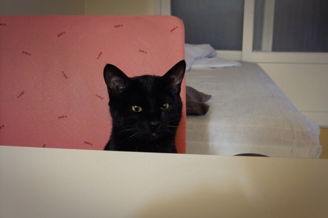

항체검사를 했다. 모든 항목에 고루 좋은 결과가 나와서 한동안 안심하고 지낼 수 있게 되었다. 이제 편한 날을 골라 중성화 수술을 받으면 당분간 병원하곤 안녕이다. 서로 다른 이유 때문이긴 하지만, 간장도 나도 은근 스트레스를 받았는데 잘 된 일이다. 수술은 다음 주중에 받게 될 거다. 왠지 찡한 마음이 들어 럭셔리한 캣타워를 12개월 할부로 냉큼 질러버렸다.
트릴로라는 브랜드의 제품인데, 한눈에 반한 나만큼 간장 맘에도 들었으면 좋겠다. 주문제작방식이라 2-3주 후에나 도착할 예정이다.
그러고 보니, 간장에겐 첫 번째 크리스마스 선물이 되겠구나. 야옹~